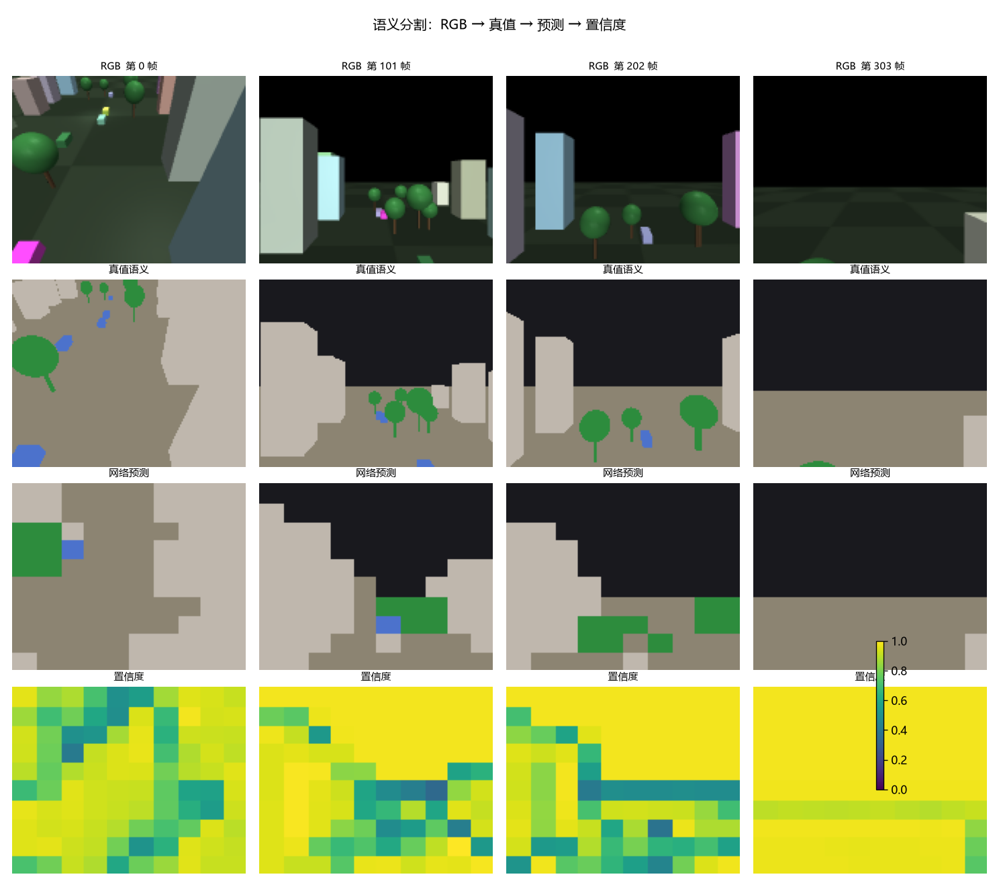
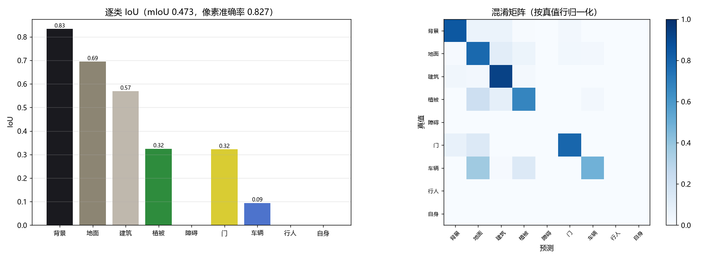
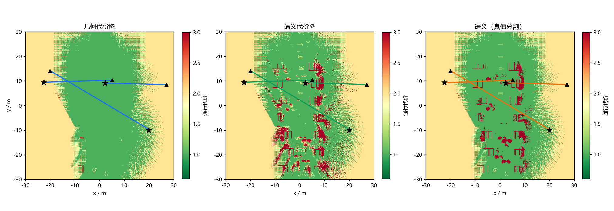
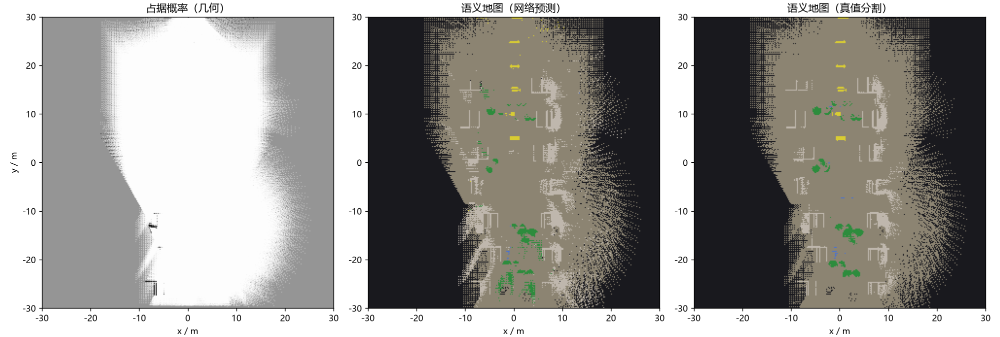

语义分割建图与语义路径规划
对应作业任务（2）传感器感知与任务（3）建图与导航。
几何地图只知道"哪里有障碍"，不知道"那是什么"。本模块用语义分割构建语义地图， 使无人机能完成"沿可通行区域飞、绕开植被、从门框穿过"这类需要理解环境的任务。
分割网络是纯 numpy 手写前向与反向的小型编解码网络（不依赖深度学习框架）， 在仿真真值分割上训练；语义栅格把占据概率与类别分布分开估计；规划器在 语义代价图上跑 A*。对比实验：几何代价图 / 语义代价图 / 真值分割语义图。
1. 模块定位
课程内的无人机建图全部是纯几何的（八叉树 / 栅格），没有任何语义建图：
| 已有模块 | 区别 |
|---|---|
octree_uav_3d_pathfinding |
几何八叉树占用地图，只有占据/空闲，没有类别 |
unmanned_aerial_car_perception |
是车，且不做地图 |
carla_slam_gmapping |
是车，纯几何 |
分割网络本身也满足"感知算法需为神经网络"的要求。
2. 架构
RGB 160×128 ─→ 分割网络（3 层 stride-2 编码器 + 1×1 头 + 最近邻上采样）
│
├─ 9 类语义图
└─ 逐像素置信度
│
深度 160×128 ─────────────┴─→ 针孔逆投影 ─→ 语义栅格
│ 占据对数几率（几何）
│ 类别投票（语义）
│
语义代价图 ─→ A* ─→ 视线捷径 ─→ 路径
3. 分割网络
3.1 结构
| 层 | 形状 | 说明 |
|---|---|---|
| Conv1 | 3×64×64 → 16×30×30，5×5 /2 | valid 卷积，不补零 |
| Conv2 | 16×30×30 → 24×14×14，3×3 /2 | |
| Conv3 | 24×14×14 → 32×6×6，3×3 /2 | |
| 分类头 | 32×6×6 → 9×6×6，1×1 | |
| 上采样 | 9×6×6 → 9×64×64 | 最近邻，无参数 |
上采样放在 logits 上而不是特征图上：解码器不需要参数，输入尺寸也不必是 2 的幂——全卷积结构让同一份权重既能跑训练的 64×64，也能跑板端的其他分辨率。 上采样的目标尺寸取自本次输入的空间尺寸，钉死在构造时会让 logits 与标签 尺寸对不上（实测 96×96 的 logits 对上 64×64 的标签）。
3.2 损失
逐像素加权交叉熵，权重取类别频率的逆平方根：
类别极不平衡（地面与天空占多数像素），不加权时网络会把所有像素判成多数类， 像素准确率看着很高而 mIoU 接近 0。权重归一化到均值为 1。
3.3 训练
Adam（，权重衰减 ，梯度范数限幅 1.0）， 30 轮，每集最多取 150 帧。数据从仿真真值分割采，RGB 用分箱平均下采样到 64×64，标签用最近邻。分箱平均会把类别索引平均成不存在的类别：训练 loss 下降而 mIoU 停在随机水平（实测）。
源尺寸与目标尺寸不成整数倍时，退回裁剪会错位：标签贯穿全图最近邻采样，输入只取左上角。 160×128 → 96×96 时 RGB 裁掉 44% 画面、标签未裁，mIoU 崩。
验证集按帧留出（15%），不按集留。 四个采集 episode 分属三个场景，留一集 时验证集与训练集分布不同：实测验证损失上升、训练损失下降（域偏移，非过拟合）。
3.4 类别分布
| 类别 | 像素占比 | 类别 | 像素占比 |
|---|---|---|---|
| 背景 | 50.65% | 门 | 1.65% |
| 地面 | 34.46% | 车辆 | 0.22% |
| 建筑 | 10.80% | 障碍 / 行人 / 自身 | 0（本批场景无样本） |
| 植被 | 2.22% |
三类无样本的类不参与 mIoU 统计（ 不是 0 分）。车辆只占 0.22% 像素， 是六类里最难的。

4. 语义栅格
每格维护三样东西：
| 量 | 更新方式 |
|---|---|
logodds |
射线穿过减 ，命中加 ，限幅 ±4 |
votes[c] |
命中点的分类结果投一票 |
hits / free |
命中、穿过的次数（区分"没看过"和"看过是空的"） |
占据与语义分开估计：占据由几何射线决定，语义由分类结果投票决定。把两者 耦合（例如"只有建筑类像素才标占据"）会让分割错误直接变成避障错误；分开之后 语义错了只影响代价，不影响安全。
两个实现细节：
射线空域采样不含终点。 终点是命中格，空域票会抵消刚加的占据票：同一堵墙 被几百条射线打中时对数几率变负，概率图上整面墙消失。
2.5D 反投影的深度按视线几何给。 同一 (u,v) 上不同俯仰角的像素若深度相同， 会映射到同一格，二维上塌缩成一条线（合成测试场景实测）。
5. 语义代价图与规划
| 类别 | 通行代价 |
|---|---|
| 地面 | 1.0（基准） |
| 门 | 1.2 |
| 植被 | 3.0（可穿越但代价高） |
| 建筑 / 障碍 / 车辆 / 行人 / 背景 | 20（不该走，但走得通） |
只有几何占据给 。 语义是估计，把它当硬约束会让一次误分类直接堵死 通路（见 §7.3）。
代价定义在格上，8 邻域的边权取两端格代价的均值乘以步长：
启发式用欧氏距离。规划完成后再做一次视线捷径：能直线通达就跳过中间点， 去掉栅格 A* 的锯齿。
置信度低时把代价往中性值拉，避免"猜错的语义"把代价压得过低——这一项是 语义地图比几何地图多出来的自由度，也是它需要被单独评测的原因。
6. 对比实验设计
同一份扫描数据、同一套 A*，只换代价图：
| 代价图 | 语义来源 |
|---|---|
| 几何 | 只用占据概率（基线） |
| 语义 | 网络预测的分割 |
| 语义（真值分割） | 仿真真值分割，用来分离"网络的错"与"语义本身的收益" |
场景按区分度挑。 起终点随便取时三张代价图给出同一条路径（实测三条路径
长度均为 46.37 m，真值语义代价均为 1.00）。make_scenarios 计算直线段在真值
语义图上的平均代价，优先取"几何上通畅、语义上不该走"的场景。
打分统一用真值语义图。 按规划器自己的代价图打分没有可比性：语义图把满路 判成建筑时，它给自己的路径打 10.50。
指标：成功率、路径长度、撞上几何占据格的采样点数、沿途语义不确定性、 A 展开节点数、真值语义代价*。
7. 实测结果
平台：Windows 11 + Intel Core 5 220H（核显，无独显）。训练 30 轮 702 s。
ROS2 侧在 Ubuntu 20.04 + Humble 虚拟机中 colcon build 通过。
7.1 分割精度
| 指标 | 值 |
|---|---|
| mIoU（6 个非空类） | 0.4730 |
| 像素准确率 | 0.8265 |
| 建图后语义一致 mIoU | 0.4688 |
| 建图后语义一致像素准确率 | 0.9313 |
| 类别 | IoU | 类别 | IoU |
|---|---|---|---|
| 背景 | 0.8332 | 门 | 0.3220 |
| 地面 | 0.6948 | 车辆 | 0.0946 |
| 建筑 | 0.5691 | 障碍 / 行人 / 自身 | 无样本 |
| 植被 | 0.3245 |
车辆只占 0.22% 像素，是六类里最难的；门（1.65%）次之。地面与建筑决定 可通行性，两者都在 0.57 以上。

7.2 规划对比
| 代价图 | 成功率 | 路径长度 | 碰撞 | 语义不确定性 | 展开节点 | 真值语义代价 |
|---|---|---|---|---|---|---|
| 几何 | 100% | 32.80 m | 0.00 | 0.151 | 4697 | 7.33 |
| 语义（网络） | 100% | 32.80 m | 0.00 | 0.144 | 6073 | 4.17 |
| 语义（真值分割） | 100% | 32.80 m | 0.00 | 0.069 | 4989 | 1.00 |
网络语义图把真值语义代价从 7.33 压到 4.17（−43%），真值分割能到 1.00。 差距就是分割精度的损失。
逐场景（代价越低越好）：
| 场景 | 几何 | 语义（网络） | 语义（真值） |
|---|---|---|---|
| 对角 | 1.00 | 1.00 | 1.00 |
| 判别14 | 10.50 | 10.50 | 1.00 |
| 判别213 | 10.50 | 1.00 | 1.00 |

语义图在"判别213"上找出了干净路线，在"判别14"上没有——网络在那一处漏检了。 整张语义图上建筑格 4494 个，真值只有 2440 个：建筑召回高、精确率低， 多出来的都是误检。

7.3 语义代价不能给 inf
初版把"建筑/障碍"的通行代价设成 inf，结果网络预测的语义图成功率 0%
（几何图与真值语义图都是 100%）：网络把场景起点格判成"建筑"、置信度 1.00，
起点代价 inf，A* 直接无解。
语义是估计，当硬约束时一次误分类即可堵死通路。现在只有几何占据（深度
射线打中）给 inf，语义高代价取有限值 20；绕不开时可穿过，代价计入"真值
语义代价"。
8. 源码解析
uav_semantic_mapping_nav/core/
├── nn.py 手写 Conv2d / Linear / Upsample2x / Adam / 交叉熵
├── segnet.py SegNet：前向、反向、加权交叉熵
├── labels.py 9 类语义表、配色与通行代价
├── segdata.py 数据采集（弓字形扫描航线 + 半圆掉头）
├── training.py 训练与推理
├── semantic_map.py SemanticGrid：逆投影、占据更新、类别投票、代价图
├── planner.py A* 与视线捷径
├── metrics.py mIoU / 像素准确率 / ECE / 路径指标
└── experiment.py 三张代价图的受控对比
8.1 nn.py：im2col 的维度顺序
as_strided 的维度顺序与 reshape 的目标一致。顺序不一致时 reshape 按内存序
重新分组；此时前向与反向仍互为转置、数值梯度校验通过，只有伴随恒等式
能发现（自检含这一项）。
8.2 segdata.py：扫描航线的几何约束
航线按场景的实际可通行空间给。以 urban_block 为例：
- 建筑中心在 、半深 ≤ 1.75 → 建筑外沿
- 树冠顶约 5.1 m
所以走廊取 、。起始点落进障碍时几何控制器会发散
（实测飞到 3.5 km 外），帧率与类别占比都正常；collect_episode 末尾因此加了
范围守卫，超范围直接报错。
换道段最初写成"位置平移 + 偏航阶跃"，速度和偏航在段边界同时跳变，姿态环饱和后 把机身甩出航线。改成半圆掉头：相邻两条横道的端点本来就重合，在同一个点上做 180° 掉头、半径只有半个道距，位置、速度、偏航全部连续，圆弧的切向自动就是机头 方向（实测参考轨迹的相邻点跳变从 29.5 m 降到 0.335 m，跟踪误差 < 0.17 m）。
8.3 semantic_map.py：分开估计的代价
cost_map() 里三处修正按顺序叠加：
base[~obs] = unknown_cost # 未观测
base[low] = 0.5 * base + 0.5 * unknown_cost # 低置信度
base[probability > 0.7] = inf # 已知占据
顺序不能反：先判占据再插值会把 插值成有限值，规划器就会往墙里走。
9. 复现步骤
python main.py --selftest # 30 项，不需要 ROS
python main.py --collect --out data/seg_dataset.npz
python main.py --train --data data/seg_dataset.npz --out data/
python main.py --evaluate --data data/seg_dataset.npz --model data/ --out results.json
python main.py --figures --data data/seg_dataset.npz --model data/ \
--outdir ../docs/img/air/uav_semantic_mapping_nav
ROS2 在线运行见包内 README.md。
10. 依赖
- MuJoCo 四旋翼仿真与 ROS2 桥接底座
（提供
/camera/image_raw、/camera/depth、/camera/seg与/uav/odom）